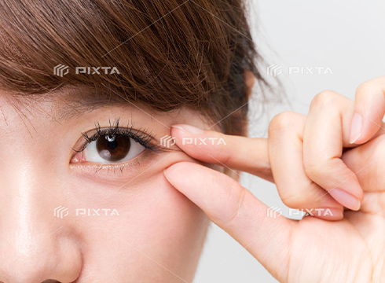
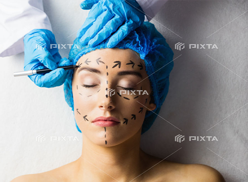
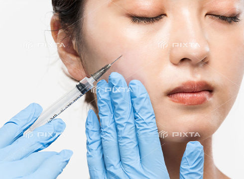

目の上（上まぶた）のシワ・たるみを取る場合は、二重のラインに沿って 切り、余分なヒフや腫れぼったい脂肪を切除して縫合します


しわ・たるみ（手術）
Wrinkles・sagging skin
ホーム ＞ しわ・たるみ（手術）

目の上・下
Around Eyes
目の上
目の下
目の下（下まぶた）のシワ・たるみを取る場合は、まつ毛の根元近くを 切開し、余分なヒフや膨らんだ脂肪を切除して縫合します
下眼瞼経結膜下脂肪摘出術
顔の中で最も印象づけるパーツは目元、その目元のさまざま変化によって老けてみられたり、疲れてみられがちになります。
その中でも特に疲れて見られ易いのは目の下の脂肪の膨らみ（目袋）。
中高年の方で目の下が膨らんでいるのをしばしば目にしますが、これは眼球を支える靭帯が加齢でゆるむことにより眼球が下垂し、 その結果として、目の周囲を覆っている眼窩脂肪に圧がかかり前に脂肪が突出することによります。
同時に、周囲の筋肉や皮膚もゆるんできますので脂肪の突出の手助けをします。また、１０代から３０代の若い人でも目袋が目立つ方もいます。
この場合は加齢で生じる場合と異なり眼球周囲の眼窩脂肪が元々多いことによります。ただ数十年前よりそのような若い人が増えているような気がします。
生活習慣の変化で若い人でも早くに老化現象が始まっているとういう事と思われます。当然そのような方でも加齢の原因も加われば更に膨らんできます。
このような目の下の膨らみに対しての対処法ですが、小じわやくすみのようにレーザー治療等にてはなかなか改善できません。
膨らみが軽度の場合は、その境目をヒアルロン酸にて埋めることにより目立たなくさせることはできますが、膨らみが目立つ場合、
ヒアルロン酸を注入しても全体が膨らんだ印象になってしまいます。
そのような場合、手術によって余分な脂肪を摘出してあげることが最良の方法と考えます。
何故ならこの手術は、まぶたの裏側からのアプローチで傷痕が一切皮膚表面に残らず、ダウンタイムの比較的少ない手術だからです。
実際には、下まぶたの裏側（結膜側）に５～１０ミリくらいの切開を加え、余分な眼窩脂肪を摘出切除します。
傷口の縫合はないので抜糸も必要ありません。
腫れも軽度の事が多く、周囲からは膨らみがなくなったことで気づかれるかもしれませんが、手術をしたことを気づかれることはないでしょう。
額
Forehead
額のシワは、老けて見えるだけでなく気難しいイメージを与えてしまいがち。
これを修正するには、シワの部分を引っ張って余分なヒフを切り取る方法を
用います。
髪の生え際か頭髪に隠れている部分を切ってヒフを上に引っ張り、余分な部分を切除して縫合します。

コメカミ・頬・アゴ・首にかけて
Temple・Cheek・Chin・Neck
頬・口角周囲・アゴのラインやのど（首）のシワやたるみがあると、老けてみえたり、だらしない印象をもたれてしまうことがあります。 これらシワやたるみを取る手術は、なるべく目立たない場所、 たとえば頭髪の中から耳の前方、後方にかけての線を切開し、余分なヒフを切り取って縫合します。
頬のくぼみやこめかみのくぼみ お腹やお尻などから脂肪吸引した脂肪をくぼんだ頬やコメカミなどに注入します。
頬のくぼみやこめかみのくぼみ
Depression
お腹やお尻などから脂肪吸引した脂肪をくぼんだ頬やコメカミなどに注入します。
また、ヒアルロン酸注入にて、ふっくらさせることも可能です
